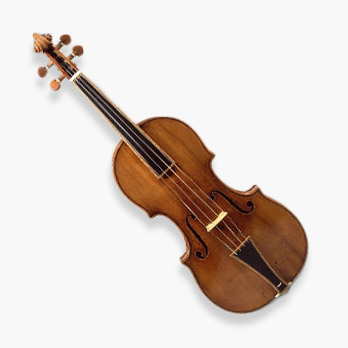

Button Links
Hero Button
Normal Button
Ghost Button
Accordions
Maurice Ravel
Joseph Maurice Ravel (7 March 1875 – 28 December 1937) was a French composer, pianist and conductor. He is often associated with impressionism along with his elder contemporary Claude Debussy, although both composers rejected the term. In the 1920s and 1930s Ravel was internationally regarded as France's greatest living composer.
Igor Stravinsky
Igor Fyodorovich Stravinsky (17 June [O.S. 5 June] 1882 – 6 April 1971) was a Russian-born composer, pianist, and conductor. He is widely considered one of the most important and influential composers of the 20th century.
Stravinsky's compositional career was notable for its stylistic diversity. He first achieved international fame with three ballets commissioned by the impresario Serge Diaghilev and first performed in Paris by Diaghilev's Ballets Russes: The Firebird (1910), Petrushka (1911), and The Rite of Spring (1913).
Gustav Holst
Gustav Theodore Holst (21 September 1874 – 25 May 1934) was an English composer, arranger and teacher. Best known for his orchestral suite The Planets, he composed a large number of other works across a range of genres, although none achieved comparable success. His distinctive compositional style was the product of many influences, Richard Wagner and Richard Strauss being most crucial early in his development. The subsequent inspiration of the English folksong revival of the early 20th century, and the example of such rising modern composers as Maurice Ravel, led Holst to develop and refine an individual style.
Modal Dialogs
Form Elements
Text Input
Text Area
Select
Buttons
Navigation
Primary Navigation
Secondary Nav
Notifications
Hero Block
Information Cards
Article / Post Card
This type of card should always be used on a white background, and always outside of the main container.
The Stratavarius Story
Stradivari probably developed his own style slowly. Some of his early violins were smaller, with notable exception to this is the 1697 Hellier violin, which had much larger proportions.
Profile Card
Wolfgang Amadeus Mozart
Call to Action Card
This type of card should always be used on a yellow background, and always outside of the main container.